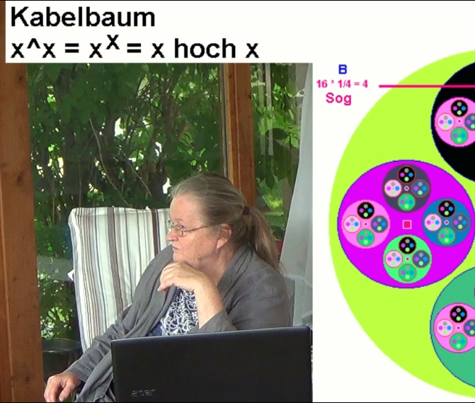
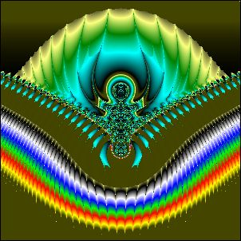

Home
Vergangener Veranstaltungs-Termin von Perlenschnur e.V.
09.06.2018 in Wöllstein Thema: Fraktale 1
Welche Rolle spielen Fraktale in der Natur? Was haben sie mit Wirbeln zu tun?
Diese Tagung des Vereins Perlenschnur soll sowohl
dem Einsteiger, als auch den Lesern des Buches Viva
Vortex oder Leuten, die sich schon intensiver mit Gabi
Müller´s Internet-Seiten befasst haben, einen weiteren
Einblick in das Wirbelweltbild gewähren, diesmal in Bezug auf Fraktale.
Die Veranstaltung soll eine Plattform für Austausch und konstruktive Kritik sein.
Als Informatikerin programmiert sie schon seit vielen
Jahren Fraktale. Einiges davon findet man auch in
ihrem Buch und auf ihren Internetseiten: viva-vortex.de/texte/
Siehe auch neue Kurzvorschau oder
Hintergrund (bei weitem zu viel für 1 Tag),
oder der Stand von vor 22 Jahren.
 Videos hier (Playlist 3 Teile)
Programm (als Flyer):
|

|
Tagesworkshop Fraktale 1
=========================
Samstag, 09.06.2018
=========================
von und mit
Dipl.Phys. Gabi Müller
9:30 bis 18:00 Uhr
Verlängerung bei Interesse möglich (auch Sonntag)
ca. 5 Pausen,
Mittagspause 12:30-13:30 Uhr
|
Welche Rolle spielen Fraktale in der Natur?
Was haben sie mit Wirbeln zu tun?
Geplante Unter-Themen:
Ist die Realität eine Hierarchie von Computern ?
Wie naturnah funktionieren unsere heutigen Computer ?
Fraktale in Mathematik und Natur
Wie entsteht ein mathematisches Fraktal?
(Kurzfassung, bei allgemeiner Nachfrage mehr)
Iterieren ist das Rechnen im Kreis. Leben ist Pulsieren und Atmen,
alles Wiederholen in Rhythmen.
Wie entsteht ein natürliches Fraktal ?
Kann Iteration und Leben gleichgesetzt werden ?
Was ist der Unterschied zu Interferenz ?
Wie lebensecht können mathematische Fraktale in Zukunft einmal sein ?
Wo stehen wir heute ?
Das berechnete Schädelfraktal und seine goldigen Hintergründe.
Hinweis: Es geht hier NICHT um das Erlernen,
wie man Fraktale programmiert
(evtl. für späteren Termin, bei Interesse),
sondern darum, was sie eigentlich sind,
sozusagen um die philosophischen Aspekte.
Veranstaltungsort:
55597 Wöllstein, Ziegelhüttenstraße 14, bei Fam. Schröder
Übernachtungsmöglichkeiten sind im Ort vorhanden (Teilnehmer haben diese
selbst zu buchen) oder es kann ein eigenes, mitgebrachtes Zelt im Garten
von Fam. Schröder aufgestellt werden.
Die Teilnahme an dieser geschlossenen Veranstaltung
des Vereins Perlenschnur erfolgt gegen eine
Teilnahmegebühr von 60,-- Euro pro Person.
Die Finanzen sollten kein Hinderungsgrund für die
Teilnahme an der Veranstaltung sein, sprechen Sie uns im
Bedarfsfall an (etwa Ratenzahlung oder Tätigwerden für
den Verein).
Desweiteren können Studenten, Schüler und Sozialhilfeempfänger gegen Nachweis die Veranstaltung zu 20% des Preises besuchen.
Anmeldung zur Tagung formlos per E-Mail an:
office@perlenschnur.org
|
Hier eintragen in den Newsletter von perlenschnur.org und viva-vortex.de
Home
| Termine
| Videos
| Links
| Impressum
| Datenschutz
|